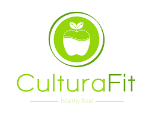
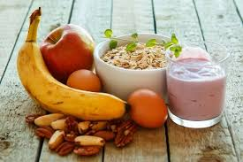
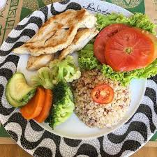

Una alimentación saludable es aquella que satisface las necesidades nutricionales y fisiológicas con el fin de asegurar un correcto crecimiento y desarrollo. Debe ser equilibrada, adecuada según los requerimientos y sensorialmente satisfactoria.
 Jose Revenga - Nutricionista
Jose Revenga - Nutricionista
“Si se disparara y matara a un vegetariano y a un carnívoro (omnívoro), el cadáver del primero tardaría de dos a tres veces más que el del segundo en volverse nauseabundamente hediondo fruto de su descomposición”. Este era uno de los descontextualizados argumentos que soltaba sin despeinarse Sylvester Graham para poner en alza las teorías vegetarianas que empezaron a hacer furor en Estados Unidos a principios del Siglo XIX, razones que ni se sabe si llegaron a ser objeto de estudio en algún momento. Desde entonces ha llovido mucho, el vegetarianismo es una de las tendencias alimentarias en alza y, afortunadamente, como corriente dietética ha ganado enteros en la solidez de su argumentario. Pero, ¿en qué consisten las múltiples formas de entender este tipo de alimentación?, ¿es más sano ser vegetariano que omnívoro? La consultora de análisis de mercados Euromonitor lo previó no hace demasiado tiempo, cuando publicó su informe sobre las diez tendencias de consumo alimentario. En él destacaban el interés general en reducir el uso de carnes y aumentar el de los productos de origen vegetal; dos previsiones que se han cumplido sobradamente. Con la ciencia en la mano, podemos afirmar que, tal y como defiende la Asociación Norteamericana de Dietética en este documento de posicionamiento (aquí en castellano): “las dietas vegetarianas adecuadamente planificadas, incluidas las dietas totalmente vegetarianas o veganas, son saludables, nutricionalmente adecuadas, y pueden proporcionar beneficios para la salud en la prevención y en el tratamiento de ciertas enfermedades. Las dietas vegetarianas bien planificadas son apropiadas para todas las etapas del ciclo vital, incluido el embarazo, la lactancia, la infancia, la niñez y la adolescencia, así como para los atletas”. Es importante destacar que, aunque existen ciertos nutrientes candentes que han de ser objeto de especial atención en las dietas vegetarianas, –por ejemplo, ácidos grasos omega-3, hierro, zinc, yodo, calcio, vitamina D y vitamina B12– tan solo la última supone un auténtico reto a la hora de alcanzar los niveles adecuados. Para eso, además de una adecuada planificación, es preciso realizar un aporte extra de esta vitamina con independencia del estilo de vegetarianismo que se lleve a cabo, tal y como señale en este artículo. Ese aporte se puede realizar con el uso de alimentos ricos en esta vitamina, con el uso de suplementos de B12 (pastillas) o mediante la inyección periódica de la misma. Una vez claro el tema de la seguridad (estando siempre atentos a la carencia de B12), el de su efectividad no está tan claro. Me refiero a una efectividad basada, por ejemplo, en la mortalidad, en si esta dieta reduce la mortalidad o aporta una mayor longevidad a estos usuarios frente a los no vegetarianos. En este terreno no hay un consenso claro: aunque hay importantes y recientes estudios que sí que constatan una menor mortalidad debida a enfermedades del corazón y de cáncer entre los vegetarianos, otros no encuentran mayores diferencias entre ser vegetariano y no serlo frente a la mortalidad por estas mismas u otras causas. Lo peor en este sentido serían las afirmaciones categóricas, y defender a capa y espada cualquiera de las posibilidades, ya que a día de hoy, hay argumentos tanto para lo uno como para lo otro. No existe un origen concreto sobre las prácticas vegetarianas. Algunas culturas, muchas veces influidas y basadas en preceptos religiosos, evolucionaron de forma independiente hacia alguna forma de vegetarianismo, cada una con sus propios matices y con sus explicaciones particulares. Sin embargo, no fue hasta el primer cuarto del siglo XIX cuando este tipo de opciones alimentarias empezaron a cuajar en el pueblo y a ser más o menos conocidas. Los primeros brotes los encontramos en el mundo anglo-germano, y terminaron por influir en algunos norteamericanos que ya desde entonces demostraron una extraña forma de establecer relaciones causales. Sin ir más lejos, el ya mencionado Sylvester Graham, inventor de la harina, el pan y los crackers con su nombre, fue uno de los primeros defensores del esta opción dietética (en realidad ovo-lácteo). Este hombre observaba el vegetarianismo como un elemento que reducía ‘el riesgo’ de onanismo, una práctica que agravaba la posibilidad de padecer ceguera. Pues sí, fue este fanático puritano señor el que dio a conocer –y extendió– el bulo de la relación entre las pajas y la ceguera. Y como solución a este y otros ‘males’, proponía una dieta en esencia vegetariana, suponemos que por espartana y alejada de la lujuria. Pero no fue el único en proponer recomendaciones disparatadas, también destaca el doctor John Harvey Kellogg (sí, el de los cereales), que no sé quedó atrás a la hora de postular absurdeces promocionando dietas vegetarianas, enemas y demás como solución a un montón de males, que según él provenían de una moral distraída facilitada por la presencia de carne en la dieta. Más allá de las cuestiones sexuales atribuidas a las dietas vegetarianas, toca mencionar el sinsentido de asociar este tipo de dietas a la no-violencia. No me refiero a la practicada con los animales a la hora de sacrificarlos, sino a aquellos que defienden que el vegetarianismo es propio o característico de personas no violentas. Conviene recordar que el patrón dietético de Adolf Hitler ha sido tachado en no pocas ocasiones de vegetariano, aunque para algunos historiadores esta imagen fue el resultado de una idea de su ministro de propaganda Göebbels. En realidad, sabiendo un poco de la dieta de este genocida, yo la tildaría cuando menos de flexitariana ya que era bastante conocida la pasión que sentía por los Leberknödel (una especie de bolitas de hígado que se pueden servir en sopa o acompañado con chucrut o patatas), la paloma estofada y otras delicatessen que carecían de raíces, tallo, hojas y frutos.
| IMAGEN ILUSTRATIVA | COMIDAS DIARIAS | INFORMACION DE IMPORTANCIA |
|  |
Un buen desayuno aporta 400 calorías en promedio, este se debe componer por un lácteo (semidescremado o descremado, como leche o yogurt) y un cereal (Pan marraqueta, pan de molde, pan integral, pan de pita, galletas de agua o soda, cereales integrales o avena). Puedes elegir algunos de estos alimentos, para acompañar tu cereal: huevo, quesillo, queso fresco, palta, mermelada light o 0% azúcar, jamón de pavo, tomate lechuga o margarina. |
|
 |
Una colación es saludable cuando no aporta una cantidad excesiva de calorías, azúcares, grasas saturadas y sodio. Frecuentemente se habla de la importancia del desayuno y los otros tiempos de alimentación, pero las colaciones no son menos importantes, cuando realmente se requieren. |
|
|  |
El almuerzo es la segunda comida más importante de tu jornada.Almorzar aporta la energía que el cuerpo necesita y afrontar cualquier actividad, además ayuda a mantener el metabolismo activo, ya que hacer varias comidas de tamaño moderado evita los largos periodos de hambre que son negativos para mantener los niveles adecuados de azúcar en el cuerpo. |
|
|
La merienda es una ingesta tan importante como el desayuno.La falta de merienda, sobre todo durante la semana, puede producir una pérdida en el rendimiento académico –a la hora de hacer los deberes, por ejemplo- y deportivo de la persona –en el caso de las actividades extra-. |
Una merienda saludable debe contener:
|
|
 |
El consumo irregular de alimentos facilita el aumento de peso y de los niveles de lípidos en sangre; en tanto una distribución regular y ordenada, como mínimo de 6 comidas, favorece el adelgazamiento y un mejor estado de salud en general. Es por esto la importancia de la 2da colacion. |
Beneficios de realizar esta colacion
|
 |
Este alimento, según los expertos en nutrición, es tan importante como el desayuno o el almuerzo, pues satisface entre el 25 y 30% de nuestro requerimiento diario de energía, le provee al cuerpo los minerales y nutrientes que necesita durante la noche y la madrugada, y es indispensable para el buen funcionamiento del aparato digestivo. |
Nutrimentos recomendados para dormir más y mejor
|